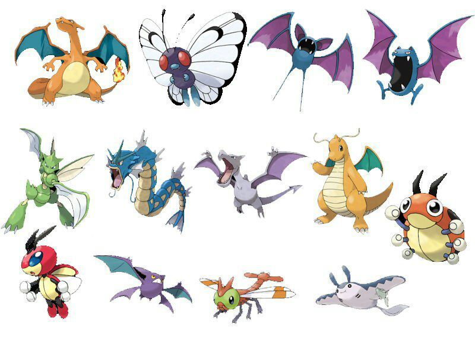

POKEMON VOLADORES

Los Pokémon de tipo volador son rápidos y con ataques que normalmente son de contacto físico, o en los que utilizan el viento a su favor. En su mayoría los Pokémon del tipo volador poseen alas, aunque hay excepciones, como Rayquaza y Gyarados que siempre flotan sin poseer ni alas ni plumas, o Tornadus, Thundurus y Landorus que montan sobre nubes